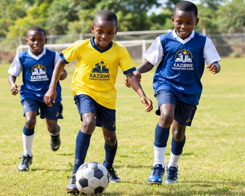
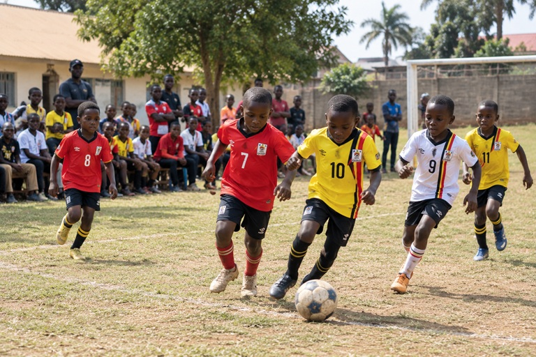
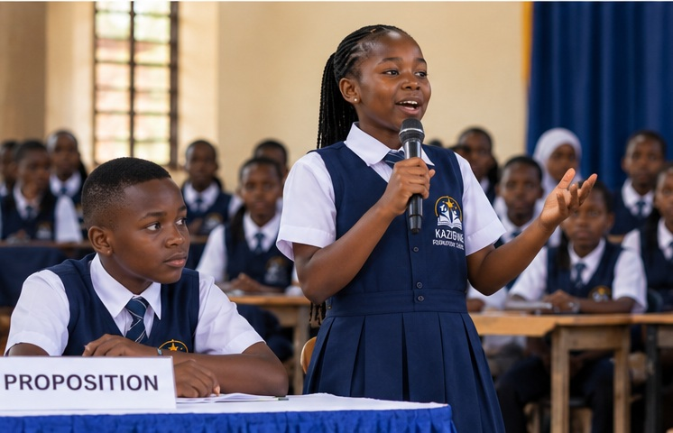

Co-Curricular Activities
Developing talents, teamwork and confidence beyond the classroom.

Learning Beyond the Classroom
Co-curricular activities give learners opportunities to explore interests, express themselves, work with others and develop skills beyond academic lessons.
Explore Activities
Sports, creative expression and group activities can help learners build confidence, responsibility and positive relationships.

Sports and Games
Physical activities can promote fitness, teamwork, discipline and fair play.

Music and Drama
Creative activities can help learners express ideas and build confidence.

Debate and Clubs
Group activities can encourage communication, critical thinking and cooperation.
What Learners Can Develop
- Teamwork and cooperation
- Confidence and self-expression
- Communication and leadership skills
- Creativity and problem-solving
- Discipline and respect for others
Discover More
Contact us to learn more about school programmes and activities.